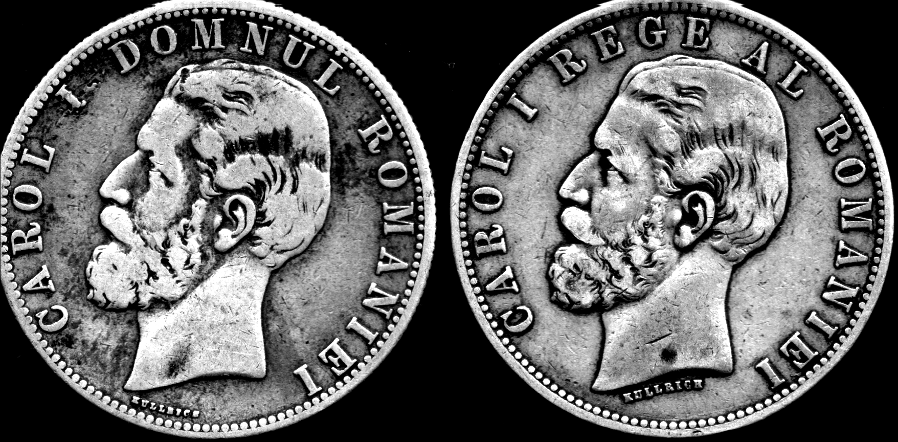

Regele Carol I
Carol I


Domnie: aprilie 1866 – 27 septembrie/10 octombrie 1914
Căsatorit cu: Regina Elisabeta
Nume complet: Karl Eitel Friedrich Zephyrinus Ludwig von Hohenzollern - Sigmaringen
Naștere: 20 aprilie 1839 Sigmaringen
Deces: 10 octombrie 1914 (75 de ani) Sinaia, România
Familie:
Tată: Prințul Karl Anton de Hohenzollern-Sigmaringen
Mamă:
Prințesa Josephine Friederike Luise de Baden

Știați că...?
Anul acesta se împlinesc 103 ani de la moartea lui Carol I
Știați că...?
Trei sferturi din căile ferate din România datează de pe vremea lui Carol I
Știați că...?
Calea Victoriei a avut încă din 1878, sens unic de mers. Acesta a fost dat de intrarea triumfală a trupelor române pe fostul Pod al Mogoşoaiei, dinspre Piaţa Victoriei spre Palatul Regal, unde armata a fost aşteptată de către regele Carol I.